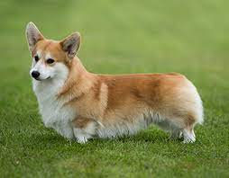

Corgi's are a dog often recognized for their short legs and
long bodies similar to that of a Dachshund.
However there are actually two different breeds of corgi:
-
Welsh Cardigan Corgi

- Welsh Pembroke Corgi 
Both breeds were bred for cattle herding in Wales, their short legs helped them to avoid
being kicked by cows while herding.
They were also used as watch dogs and for hunting. Both
are excellent family dogs, smart and easy to train, but require
a medium amount of physical
and mental stimulation to stay happy.
It should also be noted they are a talkative breed and if
you are looking for a quiet breed this is probably not the one for you.